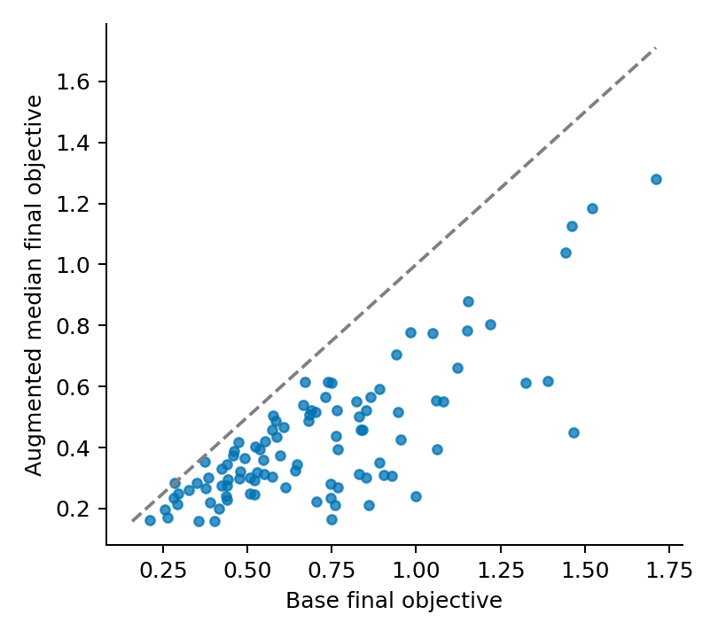

01
OptimizationCPU
Achieving Directional-Stationarity from a Single Random Direction Step
Partial reproduction / Public experiment scales run

Trimmed Lasso: 99 wins / 1 tie / 0 losses, matching the reported count; overall numerical results still differ.
What remains open
Some counts match; overall numerical results differ. Several original settings remain unspecified.
Implementation & local validation
- Implemented
- REP exploration, DCA baselines, ReLU proximal models and stationarity diagnostics.
- Locally validated
- 400 instances · 1,900 runs · all publicly reported experiment scales executed.